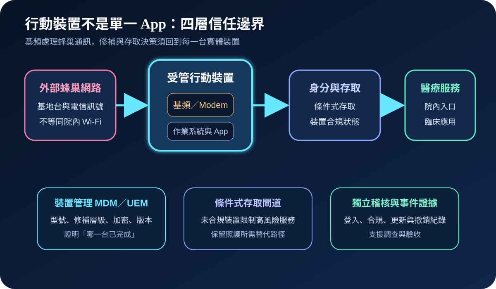
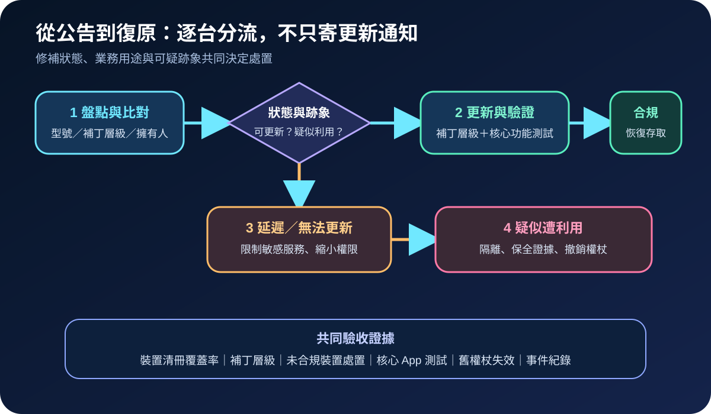
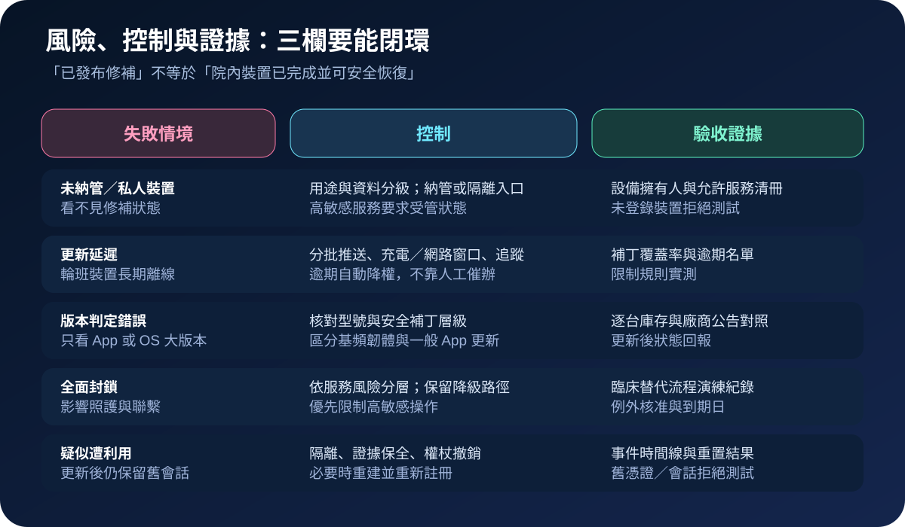

醫療資安國際觀察 · 2026-09-17
醫療行動裝置如何面對基頻漏洞：從修補覆蓋到條件式存取
作者：Dr. William｜醫療資訊與資安治理實務工作者
行動裝置的基頻元件直接處理蜂巢通訊。漏洞已出現遭利用訊號時，醫療機構須逐台確認型號與安全補丁層級，並把未修補、無法更新及疑似受害裝置分流處置，而非只發布更新通知。
名詞解釋：基頻不等同一般 App
基頻（baseband／modem）負責裝置與行動網路之間的無線通訊；權限提升（EoP）指攻擊者取得原本不應具備的較高權限；安全補丁層級是裝置聲明已納入哪些安全修補的日期標記；MDM／UEM則用於集中管理裝置組態、版本與合規狀態。基頻修補通常隨系統或韌體更新交付，不能以醫療 App 已更新取代。
國際現況與適用邊界
Google 於 2026 年 9 月 15 日發布 Pixel 更新公告，指出 CVE-2026-58704 可能正遭有限度、針對性利用；公告將其列為 Pixel 基頻元件的高風險權限提升漏洞，並說明 2026-09-05 或之後的安全補丁層級涵蓋該期公告問題。CISA 隔日把漏洞加入已知遭利用漏洞目錄（KEV），列出鑑識分流要求及 9 月 19 日的美國聯邦處置期限。
法域與產品邊界：CISA 期限與 BOD 26-04 義務適用美國聯邦文職行政機關，不是台灣醫療機構的法定期限。Google 公告針對受支援 Pixel 裝置，也不能推論所有 Android、iOS 或醫療專用設備受同一漏洞影響。台灣機構應依實際型號、補丁供應、用途、資料敏感度及可疑跡象決定處置。
規劃：把補丁覆蓋與臨床用途放在同一張清冊
範圍應包含機構配發手機、共用輪班裝置、平板、居家照護終端，以及可存取郵件、通訊、病人資料或管理介面的私人裝置。裝置管理團隊維護型號與補丁狀態；資安單位比對威脅訊號並設定條件式存取；系統擁有人確認受影響服務；臨床單位定義更新窗口與替代流程。驗收可追蹤清冊覆蓋率、補丁達標率、逾期裝置數、未合規存取阻擋率、核心 App 測試率及疑似事件關閉證據。

實作：更新、限制與事件分流並行
- 比對清冊：由 MDM／UEM 匯出型號、補丁層級、最後上線時間、擁有人與可存取服務；另盤點未納管但仍可登入的裝置。
- 分批更新：先處理高敏感帳號與可存取病人資料的裝置，安排充電、網路及輪班窗口，更新後測試通訊、身分驗證、臨床 App 與必要周邊。
- 限制逾期裝置：以條件式存取降低未合規裝置對高敏感服務的能力，保留必要照護聯繫及經核准的短期替代流程。
- 調查可疑裝置：若有異常權限、未知應用、非預期網路行為或帳號濫用，先隔離並保全 MDM、身分、端點及網路紀錄，再撤銷工作階段與憑證。
- 處理不可更新設備：確認供應商支援與替代機期程；過渡期縮小資料與服務權限，設定例外到期日，不以永久例外取代退場。
- 驗證恢復：確認補丁層級、核心功能與條件式存取狀態；疑似受害裝置必要時重建並重新註冊，測試舊權杖與舊會話已失效。
風險：全面封鎖與只看版本都可能失敗
只看作業系統大版本會漏掉補丁層級差異；只寄更新通知則無法證明輪班或長期離線裝置已完成。相反地，立即封鎖所有行動存取可能中斷臨床聯繫，迫使人員改用未受控管道。治理設計須依服務風險分層，讓未修補裝置先失去高敏感能力，同時保留可追蹤的降級流程。若已有遭利用跡象，更新只能修正漏洞，不能自動撤銷已建立的工作階段或證明資料未被存取。

可執行清單
- 能否列出每台可存取醫療服務的行動裝置、型號、補丁層級、擁有人與用途？
- 是否區分「更新已提供」「已推送」「已安裝」與「臨床功能已驗證」？
- 未合規裝置是否會自動限制高敏感服務，而非只產生告警？
- 更新窗口是否涵蓋夜班、共用設備、居家照護與長期離線裝置？
- 疑似遭利用時，是否能保存裝置、身分與網路證據並撤銷既有會話？
- 無法更新的裝置是否有到期日、補償控制、替代流程與退場計畫？
來源
- Google Android Open Source Project｜Pixel Update Bulletin—September 2026（發布：2026-09-15；查閱：2026-09-17）
- CISA｜Known Exploited Vulnerabilities Catalog：CVE-2026-58704（加入：2026-09-16；查閱：2026-09-17）
- NIST｜SP 800-124 Rev. 2: Guidelines for Managing the Security of Mobile Devices in the Enterprise（發布：2023-05；查閱：2026-09-17）
內容說明
本文依健康台灣深耕計畫相關治理內容整理，並參考 Google、CISA 與 NIST 公開資料，提出台灣醫療機構可採用的行動裝置修補、存取限制及事件分流方法；不取代主管機關公告、法律意見、供應商文件、事件鑑識或個案臨床風險判斷。